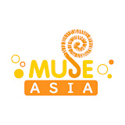

The episode videos and thumbnails on this site are sourced from Muse Asia's official uploads.

Muse Asia is the official YouTube channel of Muse Communication, a Taiwan-based anime licensor and distributor, streaming English and Chinese-subtitled anime across Southeast Asia, East Asia, and South Asia. The episode videos and thumbnails featured on TensuraStream were sourced from their uploads. All rights to the footage and imagery belong to Muse Asia, Muse Communication, and the original rights holders of That Time I Got Reincarnated as a Slime.
Visit Muse Asia on YouTubeTensuraStream is an unofficial, non-commercial fan project. No copyright is claimed over any video or image sourced from Muse Asia — this page exists solely to credit the original uploader.